[Desember 1995] [Februar 1996]
Januar 1996
2. januar 1996
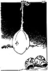
3. januar 1996
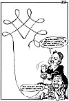
4. januar 1996
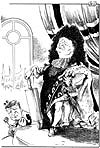
- Staten, det er meg, og seks prosent Thorbjørn Jagland. Tilsammen etthundreogseks prosent.5. januar 1996
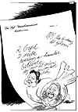
Brevfruene.6. januar 1996
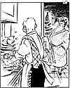
- Han: Jeg hører det er på tale med elektronisk overvåking av hjemmesonene.9. januar 1996
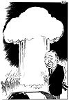
10. januar 1996
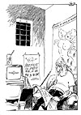
- Endelig noen som har forstått dette med å få oss på rett kurs.11. januar 1996
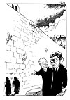
- Please Mr. Godal!12. januar 1996
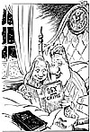
Once upon a time...13. januar 1996
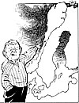
- Når Rattsø-utvalget snur opp-ned på alt, er det kun i Senterpartiet man kan føle seg trygg!16. januar 1996
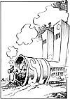
Forøvrig er det min mening at Oslo bør ødelegges!17. januar 1996
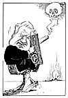
18. januar 1996
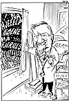
Jeg tror vi begynner med å redusere støynivået.19. januar 1996
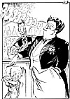
- Ikke nok med at jeg lovet 30 000 nye arbeidsplasser - men jeg laget sogar 30 000 millionærer av dem!20. januar 1996
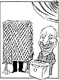
23. januar 1996
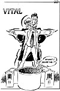
24. januar 1996
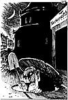
- Mannen som natt til i går la ned 900 postkontorer, var ca. 180 cm høy og snakket vestlandsdialekt. Opplysninger bes gitt til nærmeste politikammer, og ikke til Førde lensmannskontor.25. januar 1996
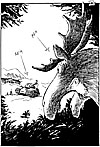
- Hva blir det neste? Vitale deler av Regjeringen?26. januar 1996
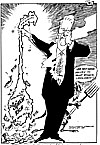
Svenskene vil ha slutt på at EU behandler Norge med fløyelshansker.27. januar 1996
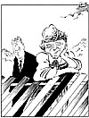
- Tenk nå har vi det så godt i Norge at det er ingen som liker oss.30. januar 1996
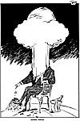
31. januar 1996
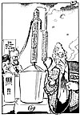
- Denna har døm itte vøri helt heldig med!
[Desember 1995] [Februar 1996]
[Innhold] [Info] [Aftenposten hjemmeside] [Bakgrunn/Kommentar hovedside]

{kind=link}
{kind=link}
{kind=link}
{kind=link}
{kind=link}
{kind=link}
{kind=link}
{kind=link}
{kind=link}
{kind=link}
{kind=link}
{kind=link}
{kind=link}
{kind=link}
{kind=link}
{kind=link}
{kind=link}
{kind=link}
{kind=link}
{kind=link}
{kind=link}
{kind=link}